NCERT Solutions for Class 11 Chemistry Chapter 13 Hydrocarbons
Topics and Subtopics in NCERT Solutions for Class 11 Chemistry Chapter 13 Hydrocarbons:
| Section Name | Topic Name |
| 13 | Hydrocarbons |
| 13.1 | Classification |
| 13.2 | Alkanes |
| 13.3 | Alkenes |
| 13.4 | Alkynes |
| 13.5 | Aromatic Hydrocarbon |
| 13.6 | Carcinogenicity and Toxicity |
NCERT Solutions Class 11 ChemistryChemistry Lab ManualChemistry Sample Papers
NCERT Class 11 Chemistry Chapter 13 Questions Solved
Question 1. How do you account for the formation of ethane during chlorination of methane?
Answer: Chlorination of methane is a free radical reaction which occurs by the following mechanism:
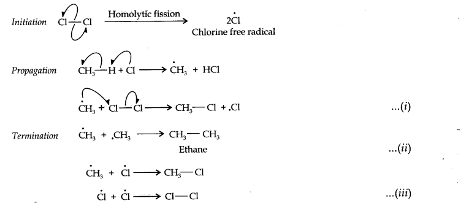
From the above mechanism, it is evident that during propagation step, CH3 free radicals are produced which may undergo three reactions, i.e., (i) — (iii). In the chain termination step, the two CH3 free radicals combine together to form ethane (CH3—CH3) molecule.
Question 2. Write IUPAC names of the following compounds:
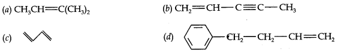
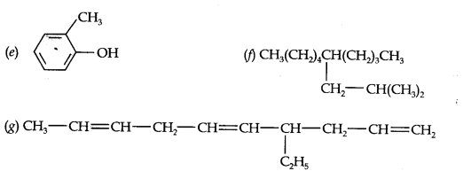
Answer:
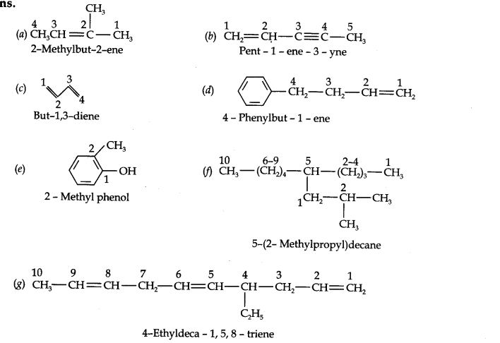
More Resources for CBSE Class 11
- NCERT Solutions
- NCERT Solutions Class 11 Maths
- NCERT Solutions Class 11 Physics
- NCERT Solutions Class 11 Chemistry
- NCERT Solutions Class 11 Biology
- NCERT Solutions Class 11 Hindi
- NCERT Solutions Class 11 English
- NCERT Solutions Class 11 Business Studies
- NCERT Solutions Class 11 Accountancy
- NCERT Solutions Class 11 Psychology
- NCERT Solutions Class 11 Entrepreneurship
- NCERT Solutions Class 11 Indian Economic Development
- NCERT Solutions Class 11 Computer Science
Question 3. For the following compounds, write structural formulas and IUPAC names for all possible isomers having the number of double or triple bond as indicated:
(a) C4H8 (one double bond) (b) C5H8 (one triple bond)
Answer: (a) Isomers of C4H8 having one double bond are:
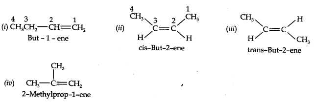
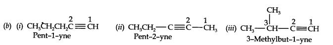
Question 4. Write IUPAC names of the products obtained by the ozonolysis of the following compounds:
(i) Pent-2-ene (ii) 3, 4-Dimethylhept-3-ene (iii) 2-Ethylbut-l-ene (iv) 1-Phenylbut-l-ene.
Answer:

Question 5. An alkene ‘A’ on ozonolysis gives a mixture of ethanal and pentan-3-one. Write the structure and IUPAC name of ‘A’.
Answer: Step 1. Write the structure of the products side by side with their oxygen atoms pointing towards each other.
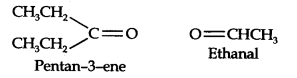
Step 2. Remove the oxygen atoms and join the two ends by a double bond, the structure of the alkene ‘A’ is
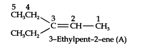
Question 6. An alkene ‘A’ contains three C—C, eight C—H, a-bonds, and one C—C n-bond. ‘A’ on ozonolysis gives two moles of an aldehyde of molar mass 44 u. Write the IUPAC name of’A’.
Answer: (i) An aldehyde with molar mass of 44 u is ethanal, CH3CH=0
(ii) Write two moles of ethanal side by side with their oxygen atoms pointing towards each other.
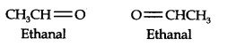
(iii) Remove the oxygen atoms and join them by a double bond, the structure of alkene ‘A’ is
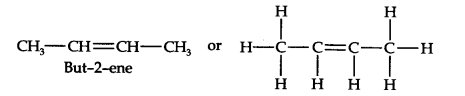
As required, but-2-ene has three C—C, eight C—H a-bonds and one C—C π-bond.
Question 7. Propanal and pentan-3-ene are the ozonolysis products of an alkene. What is the structural formula of the alkene?
Answer: (i) Write the structures of propanal and pentan-3-ene with their oxygen atoms facing each other, we have,
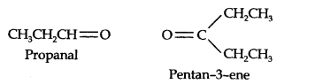
(ii) Remove oxygen atoms and join the two fragments by a double bond, the structure of the alkene is
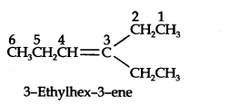
Question 8. Write chemical equations for the combustion reaction of the following hydrocarbons, (i) Butane (ii) Pentene (iii) Hexyne (iv) Toluene
Answer:
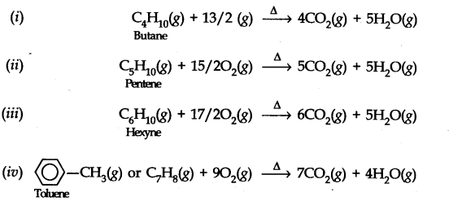
Question 9. Draw the cis- and trans-structures for hex-2-ene. Which iosmer will have higher b.p. and why?
Answer: The structures of cis- and trans-isomer of hex-2-ene are:
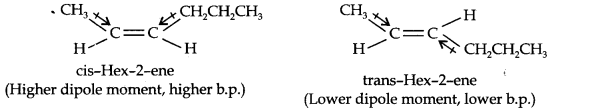
The boiling point of a molecule depends upon dipole-dipole interactions. Since cis-isomer has higher dipole moment, therefore, it has higher boiling point.
Question 10. Why is benzene extra-ordinarily stable though it contains three double bonds?
Answer:
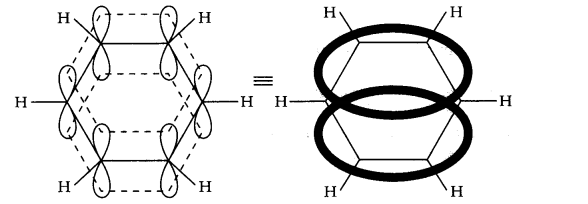
The six electrons of the p-orbitals cover all the six carbon atoms, and are said to be delocalized. As a result of delocalization there formed a stronger n-bond and a more stable molecule.
Question 11. What are the necessary conditions for any system to be aromatic?
Answer: The necessary conditions for a molecule to be aromatic are:
- It should have a single cyclic cloud of delocalised n-electrons above and below the plane of the molecule.
- It should be planar. This is because complete delocalization of n-electrons is possible only if the ring is planar to allow cyclic overlap of p-orbitals.
- It should contain Huckel number of electrons, i.e., (4n + 2) n-electrons where n = 0, 1, 2, 3 etc.
A molecule which does not satisfy any one or more of the above conditions is said to be non-aromatic.
Question 12. Explain why the following systems are not aromatic?
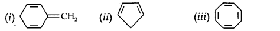
Answer:
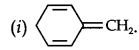
Due to the presence of a sp3-hybridized carbon, the system is not
planar. It does contain six n-electrons but the system is not fully conjugated since all the six n-electrons do not form a single cyclic electron cloud which surrounds all the atoms of the ring. Therefore, it is not an aromatic compound.
(ii)
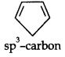
Due to the presence of a sp3 -carbon, the system is not planar. Further,it contains only four n-electrons, therefore, the system is not aromatic because it does not contain planar cyclic cloud having (4n + 2) n-electrons.
(iii)
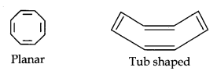
Cyclo-octatetraene is not planar but is tub shaped. It is, therefore, a non-planar system having 8 n-electrons.
Therefore, the molecule is not aromatic since it does not contain a planar cyclic cloud having (4n + 2) n-electrons.
Question 13. How will you convert benzene into (i)p-nitrobromobenzene (ii) m-nitrochlorobenzene (iii) p-nitrotoluene (iv) acetophenone?
Answer: (i) The two substituents in the benzene ring are present at p-positions. Therefore, the sequence of reactions should be such that first an o, p-directing group, i.e., Br atom should be introduced in the benzene ring and this should be followed by nitration. Thus,
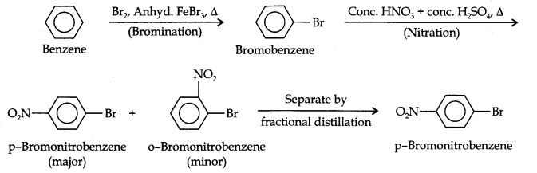
(ii) Here since the two substituents are at p-position w.r.t. each other, therefore, the first substituent in the benzene ring should be a o, p-directing group (i.e., CH3) and then the other group (i.e., NO2) should be introduced. Therefore, the sequence of reactions is:
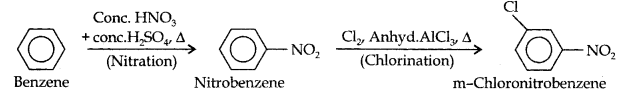
(iii)Here since the two substituents are at m-position w.r.t. each other, therefore, the first substituent in the benzene ring should be a m-directing group (i.e., NO2) and then other group (i.e.,Cl) should be introduced.
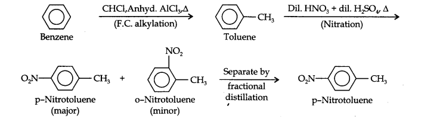
(iv)Acetophenone can be prepared by F.C. acylation using either acetyl chloride or acetic anhydride.
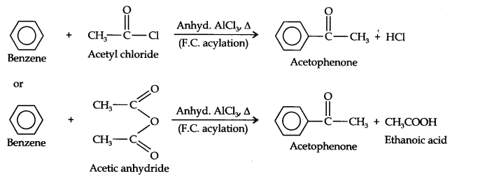
Question 14. In the alkane, CH3CH2—C(CH3)2—CH2—CH(CH3)2, identify 1°, 2°, 3° carbon atoms and give the number of H-atoms bonded to each one of these.
Answer: The expanded formula of the given compound is
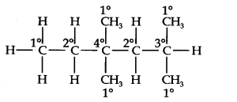
Question 15. What effect does branching of an alkane chain has on its boiling point?
Answer: Branching of carbon atom chain decreases the boiling point of alkane.
Question 16. Addition of HBr to propene yields 2-bromopropane, while in presence of benzoyl peroxide, the same reaction yields 1-bromopropane. Explain and give mechanism.
Answer: Addition of HBr to propene is an ionic electrophilic addition reaction in which the electrophile, i.e., H+ first adds to give a more stable 2° carbocation. In the 2nd step, the carbocation is rapidly attacked by the nucleophile Br~ ion to give 2-bromopropane.
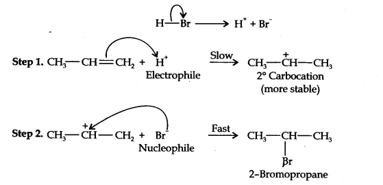
In presence of benzoyl peroxide, the reaction is still electrophilic but the electrophile here is a Br free radical which is obtained by the action of benzoyl peroxide on HBr
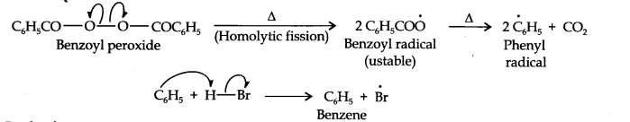
In the first step, Br radical adds to propene in such a way so as to generate the more stable 2° free radical. In the second step, the free radical thus obtained rapidly abstracts a hydrogen atom from HBr to give 1-bromopropane.
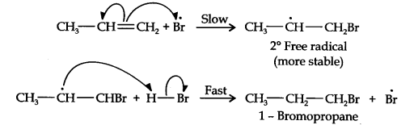
From the above discussion, it is evident that although both reactions are electrophilic addition reactions but it is due to different order of addition of H and Br atoms which gives different products.
Question 17. Write down the products ofozonolysis ofl, 2-dimethylbenzene (o-xylene). How does the result support Kekule structure of benzene?
Answer: o-Xylene may be regarded as a resonance hybrid of the following two Kekule structures. Ozonolysis of each one of these gives two products as shown below:
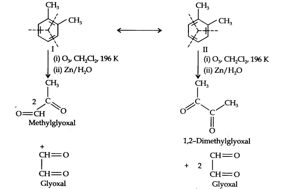
Thus, in all, three products are formed. Since all the three products cannot be obtained from any one of the two Kekule structures, this’ shows that o-xylene is a resonance hybrid of the two Kekule structures (I and II).
Question 18. Arrange benzene, n-hexane and ethyne in decreasing order of acidic behaviour. Also give reason for this behaviour.
Answer: The hybridization state of carbon in these three compounds is:
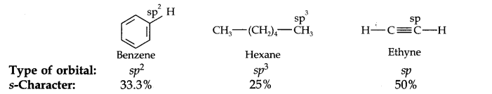
Since s-electrons are closer to the nucleus, therefore, as the s-character of the orbital making the C—H bond increases, the electrons of C—H bond lie closer and closer to the carbon atom. In other words, the partial +ve charge on the H-atom and hence the acidic character increases as the s-character of the orbital increases. Thus, the acidic character decreases in the order: Ethyne > Benzene > Hexane.
Question 19. Why does benzene undergo electrophilic substitution reactions easily and nucleophilic substitutions with difficulty?
Answer: Due to the presence of an electron cloud containing 6 n-electrons above and below the plane of the ring, benzene is a rich source of electrons. Consequently, it attracts the electrophiles (electron-deficient) reagents towards it and repels nucleophiles (electron- rich) reagents. As a result, benzene undergoes electrophilic substitution reactions easily and nucleophilic substitutions with difficulty.
Question 20. How will you convert the following compounds into benzene?
(i) Ethyne (ii) Ethene (iii) Hexane.
Answer:
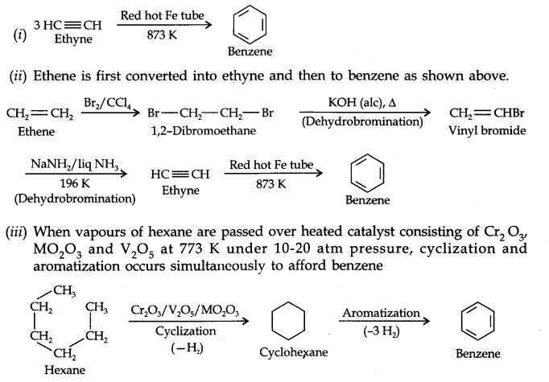
Question 21. Write structures of all the alkenes which on hydrogeneration give 2-methylbutane.
Answer:
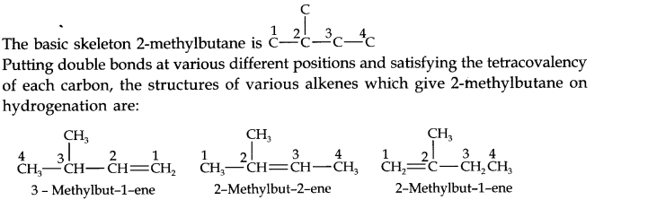
Question 22. Arrange the following set of compounds in order of their decreasing relative reactivity with an electrophile, E+.
(a) Chlorobenzene, 2, 4-dinitrochlorobenzene, p-nitrochlorobenzene
(b) Toluene,p—H3C—C6H4—NO2, p—O2N—C6H4—NO2.
Answer: (a) The typical reactions of benzene are electrophilic substitution reactions. Higher the electron-density in the benzene ring, more reactive is the compound towards these reactions. Since N02 is a more powerful electron-withdrawing group than Cl, therefore, more the number of nitro groups, less reactive is the compound. Thus, the overall reactivity decreases in the order:
Chlorobenzene > p-nitrochlorobenzene > 2, 4-dinitrochlorobenzene
(b) Here, CH3 group is electron donating but N02 group is electron-withdrawing. Therefore, the maximum electron-density will be in toluene, followed by p-nitrotoluene followed by p-dinitrobenzene. Thus, the overall reactivity decreases in the order:
Toluene >p—H3C—C6H4—NO2, p—O2N—C6H4—NO2.
Question 23. Out of benzene, m-dinitrobenzene and toluene which will undergo nitration most easily and why?
Answer: CH3 group is electron-donating while—NO2 group is electron-withdrawing. Therefore, maximum electron density will be in toluene, followed by benzene and least in m-dinitrobenzene. Therefore, the ease of nitration decreases in the order: toluene > benzene > m-dinitrobenzene.
Question 24. Suggest the name of another Lewis acid instead of anhydrous aluminium chloride which can be used during ethylation of benzene.
Answer: Anhydrous Ferric Chloride (FeCl3) is another Lewis acid which can be used.
Question 25. Why is Wurtz reaction not preferred for preparation of alkanes containing odd number of carbon atoms? Illustrate your answer by taking one example.
Answer: For preparation of alkanes containing odd number of carbon atoms, a mixture of two alkyl halides has to be used. Since two alkyl halides can react in three different ways, therefore, a mixture of three alkanes instead of the desired alkane would be formed. For example, Wurtz reaction between ‘1-bromopropane and 1-bromobutane gives a mixture of three alkanes i.e., hexane, heptane and octane as shown below:
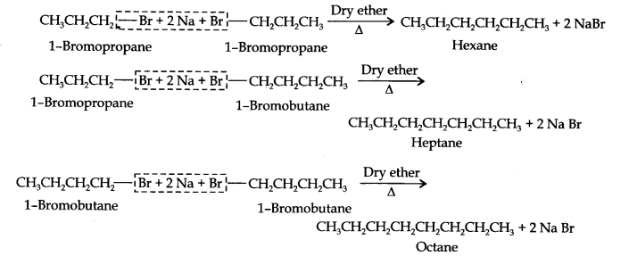
MORE QUESTIONS SOLVED
NCERT Solutions for Class 11 Chemistry Chapter 13 Very Short Answer Type Questions
Question 1.
 >
>
Answer:
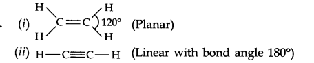
Question 2. What are conformations?
Answer: Conformations are spatial arrangements which are obtained by rotation around sigma bonds.
Question 3. What is decarboxylation ? Give an example.
Answer: The process by which carbon dioxide is removed from sodium acetate (or any sodium salt of acid) with the help of sodalime is called decarboxylation.
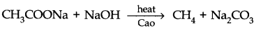
Question 4. What do you mean by pyrolysis?
Answer: The decomposition of a compound by heat is called pyrolysis. This process when applied to alkanes is known as cracking.
Question 5. What happens when ethanol is heated with cone. H2SO4?
Answer:
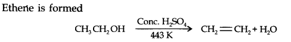
Question 6. Convert ethylene to ethane.
Answer:
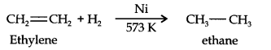
Question 7. What is Lindlar’s catalyst? Give its use.
Answer: Pd/BaSO4 is known as Lindlar’s catalyst. It is used in the conversion of alkynes to alkenes with the help of H2.
Question 8. What happens when benzene is treated with excess of Cl2 in presence of sunlight? Give chemical reaction.
Answer:
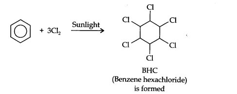
Question 9. Why are alkanes called paraffins?
Answer: Paraffins means little affinity. Alkanes due to strong C—C and C—H bonds are relatively chemically inert.
Question 10. Arrange the three isomers of pentane in increasing order of their boiling points.
Answer: 2, 2-Dimethylpropane < 2-methylbutane < pentane.
Question 11. Arrange the following: HCl, HBr, HI, HF in order of decreasing reactivity towards alkenes.
Answer: HI > HBr > HCl > HF
Question 12. Although benzene is highly unsaturated it does not undergo addition reactions. Why?
Answer: It is due to delocalization of π -electrons in benzene it is highly stable.
Question 13. Why are Alkenes called olefins?
Answer: Alkenes are commonly known as olefins because the lower members form oily products on treatment with chlorine or bromine.
Question 14. Which is more acidic: ethene or ethyne and why?
Answer: Ethyne is more acidic than ethene because it has ‘sp’ hybridised ‘C’ which is more electronegative.
Question 15. What is Huckel rule?
Answer: Huckel rule states that a compound is said to be aromatic if it has (4n + 2) n electrons
delocalized where n = an integer 0,1, 2, 3,
Question 16. How will you distinguish between propene and propane?
Answer: Pass them through dilute cold KMnO4solution (purple) or Br2 in CCl4 solution (red). Propene will decolourise both the solutions but propane does not react.
Question 17. How will you distinguish between acetylene and ethylene?
Answer: Acetylene forms precipitate with ammoniacal silver nitrate solution, ethylene does not react with these reagents.
Question 18. What happens when benzene is treated with acetyl chloride in presence of AlCl3?
Answer: Acetophenone is formed.
Question 19. Which type of isomerism is exhibited by but-l-yne and but-2-yne?
Answer: Position isomerism.
Question 20. What is electrophile in sulphonation?
Answer: SO3.
Question 21. What is the hybridisation of central carbon in 1,2-propadiene (CH2=C=CH2)?
Answer: sp.
Question 22. What are Arenes?
Answer: Arenes are aromatic hydrocarbons.
NCERT Solutions for Class 11 Chemistry Chapter 13 Short Answer Type Questions
Question 1.Define resonance energy. What is resonance energy of benzene?
Answer: Resonance .energy is the difference in energy between actual structure of compound . and most stable resonating structure. The resonance energy of benzene is 150.325 J mol-1 .
Question 2. Explain the following with examples:
(i) Wurtz reaction
(ii) Hydrogenation.
Answer: (i) Wurtz reaction: Alkanes are produced by heating an alkyl halide with sodium metal in dry ether solution.
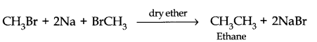
(ii) Hydrogenation: Alkenes react with hydrogen in presence of Ni or Pd catalyst to form saturated compounds.
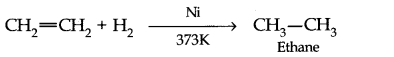
Question 3. Discuss the shape of methane and ethane.
Answer: In methane, carbon forms have single bonds with four hydrogen atoms. Since the carbon atom is attached to four other atoms, it uses sp3 hybrid orbitals to form these bonds. Hybridization of ‘C’ is sp3
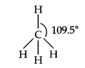
Shape—tetrahedral having bond angle = 109.5°
In ethane, there are six C—H covalent bonds and one C—C covalent bond.
The C—H bond is the result of overlap of an sp3 hybrid orbital from carbon and s-orbital from hydrogen.
Orbital structure can be shown as
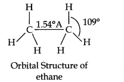
Question 4. Classify the following compounds into (i) alkanes (ii) alkenes (iii) alkynes (iv) arenes. (a) C6H6 (b) C4H8 (C) C8H8 (d) C5H8 (e) C6H14
Answer: (i)Alkanes — C6H14, C8H18
(ii)Alkenes — C4H8
(iii)Alkynes — C5H8
(iv)Arenes — C6H6.
Question 5. What is polymerization? Give an example.
Answer: The process by which simple molecules join together to form large molecules is known as polymerization.
Simple alkenes polymerize to form long chain addition polymers.
For example, ethylene gives polyethylene.
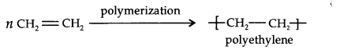
Question 6. Write the IUPAC names of the following compounds.
(i) (CH3)CCH2C(CH3)3 (ii) (CH3)2C(C2H5)2
Answer:
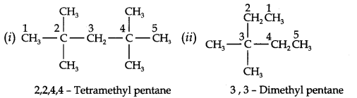
Question 7. Write the structure and IUPAC names of different structural isomers of alkenes corresponding to C5H10.
Answer:
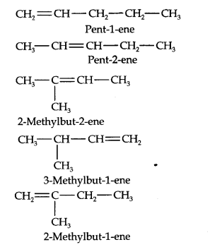
Question 8. Draw the structures of cis- and trans-isomers of the following compounds. Also write their IUPAC names.(i) CHCl—CHCl (ii) C2HC(CH3)=C(CH3)C2H5
Answer:
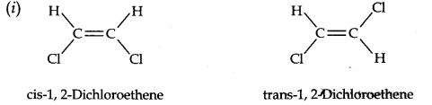
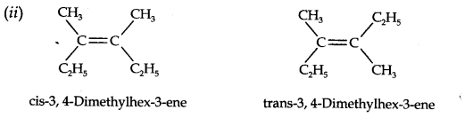
Question 9. (a) What effect the branching of an alkane has on its melting point?
(b) Which of the following has highest boiling point?
(i) 2-methyl pentane
(ii) 2, 3-diethyl butane
(iii) 2, 2-dimethyl butane
Answer: (a) In general conception, as the branching increases packing of the molecules in the crystal lattices becomes less close and hence melting point decreases accordingly. (b) As the branching increases, surface area decrease and thus magnitude of van der Waals forces of attraction decreases and hence the boiling point decreases. 2,2-dimethyl butane has lower surface area due to more branching and hence has lower boiling point.
Question 10. How will you convert ethanoic acid into ethene?
Answer:
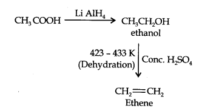
NCERT Solutions for Class 11 Chemistry Chapter 13 Long Answer Type Questions
Question 1. Explain the term aromaticity. What are the necessary conditions for any compound to show aromaticity?
Answer: The aromatic compounds apparently contain alternate double and single bonds in a cyclic structure, and resemble benzene in chemical behaviour. They undergo substitution reactions rather addition reactions. This characteristic behaviour is called Aromatic character or Aromaticity.
Conditions for Aromaticity:
- An aromatic compound is cyclic and planar.
- Each atom in an aromatic ring has a p-orbital. These p-orbitals must be parallel so that a continuous overlap is possible around a ring.
- The cyclic n-molecular orbital formed by the overlap of p-orbitals must contain (4n + 2) K electrons, where (n = 0,1, 2, 3, 4 etc.)
Question 2.(a) Define substitution reactions. Why do benzene undergo substitution reactions even though they contain double bonds?
(b) What happens when benzene is treated with
(i) Br2 in presence of anhydrous AlCl3
(ii) Cone. H2SO4 at 330K
(iii) Mixture of cone. H2SO4and com. HNO3 at 330 K
(iv) Ethanoyl Chloride in presence of anhydrous AlCl3
Answer: (a) Substitution reactions are those reactions in which an atom or group of atoms directly attached to carbon in the substrate molecule is replaced by another atom or group of atoms, for example,
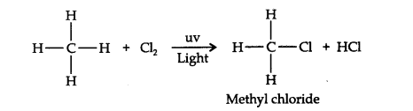
A hydrogen atom of the methane molecule is replaced by chlorine atom. Benzene undergoes electrophilic substitution reactions because benzene ring has delocalized electrons is an electron-rich system. It is attacked by electrophiles giving substitution products.
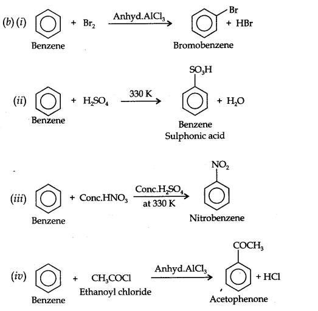
Question 3. (a) What type of isomerism is shown by methoxymethane and ethanol?
(b) How will you bring out the following conversions.
(i) Acetylene to ethane (ii) Benzene to Toluene (iii) Ethanol to ethene?
Answer: (a) Functional isomerism.
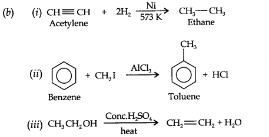
Question 4. Discuss the preparation of alkanes by Wurtz reaction. What is the limitaHon of the reaction?
Answer: Wurtz synthesis: Higher alkanes are prepared by heating an alkyl halide (RX) with sodium metal in dry ether solution.
Limitations: Use of two different alkyl halides in Wurtz reaction always leads to a mixture of alkanes. The separation of these alkanes is difficult because there is only a little difference in their boiling points. Thus only symmetrical alkanes can be prepared by this method.
Question 5. (a) Why are alkenes called unsaturated hydrocarbons?
(b) How will you test the presence of double bond in an alkene?
(c) Name the products formed when propene is subjected to ozonolysis.
Answer: (a) Alkenes contain two hydrogen atoms less than alkanes and thus they contain C—C double bond (C=C) in their molecule. Thus they are called unsaturated hydrocarbons.
(b) Alkenes react with cold dilute KMn04 solution to form gycols. Since bright purple colour of KMn04 disappears during the reaction it is used as a test for the presence of double bond.
(c) A mixture of acetaldehyde and formaldehyde is formed.
NCERT Solutions for Class 11 Chemistry Chapter 13 Multiple Choice Questions
Question 1. Which of the following is correct regarding the stability of carbocation?
(a) 3° > 2° > 1° (b) 1° < 2° < 3° (c) 2° > 1° > 3° (d) 2° > 3° > 1°
Question 2. A liquid hydrocarbon is converted to a mixture of gaseous hydrocarbon by
(a) hydrolysis (b) oxidation (c) distillation (d) cracking
Question 3. The peroxide effect in anti-Markovnikov addition involves
(a) The heterolytic fission of the double bond
(b) The homolytic fission of the double bond
(c) a free radical mechanism
(d) an ionic mechanism
Question 4. The catalyst required for the given reaction is

(a) HgSO4 (b) Pt (c) AICl3 (d) Pd
Question 5. Which conformation of ethane has the lowest potential energy?
(a) Eclipsed (b) Skewed
(c) Staggered (d) All will have equal PE
Question 6. Baeyer’s reagent is
(a) aqueous KMn04 (b) neutral KMn04
(c) alkaline KMn04 (d) aqueous bromine water
Question 7. Benzene reacts with acetyl chloride in the presence of A1C13 to give
(a) acetophenone (b)toluene
(c)benzophenone (d) ethyl benzene
Question 8. An aqueous solution of compound A gives ethane on electrolysis, the compound A is
(a) Ethyl acetate (b) Sodium acetate
(c) Sodium propionate (d) Sodium ethoxide
Question 9. Tolueue reacts with chlorine in the presence of light to give
(a) benzyl choride (b) benzoyl chloride
(c) p-chlorotoluene (d) o-chlorotoluene
Question 10. Which of the following is less reactive than benzene towards electrophilic substitution reactions?
(a) Nitrobenzene (b) Aniline
(c) Bromobenzene (d) Chlorobenzene
Answer: 1. (a) 2. (d) 3. (c) 4. (a) 5. (c)
6. (c) 7. (a) 8. (b) 9. (a) 10. (a)
NCERT Solutions for Class 11 Chemistry Chapter 13 HOTS Questions
Question 1. What effect does branching of an alkane chain has on its boiling point?
Answer: As branching increases, the surface area of the molecule decrease which results in a small .area of contact. As a result, the van der Waals force also decrease which can be overcome at a relatively lower temperature. Hence, the boiling point of an alkane chain decreases with an increase in branching.
Question 2. An alkene ‘A’ contains three C-C, eight C-H σ bonds and one C-C π bond. ‘A’ on ozonolysis gives two moles of an aldehyde of molar mass 44 u. Deduce IUPAC name of’A’.
Answer: The formation of two moles of an aldehyde indicates the presence of identical structural units on both sides of the double bond containing carbon atoms. Hence, the structure of ‘A’ can be represented as: XC = CX
There are eight C-H σ bonds. Hence, there are 8 hydrogen atoms in ‘A’. Also, there are three C-C bonds. Hence, there are four carbon atoms present in the structure of ‘A’.
The IUPAC name of ‘A’ is But-2-ene.
Ozonolysis of ‘A’ takes place as:
Question 3. How will you demonstrate that double bonds of benzene are somewhat different from that of olefins?
Answer: The double bonds of olefins decolourize bromine water and discharge the pink colour of Bayer’s reagent while those of benzene not.
Question 4. How will you separate propene from propyne?
Answer: Bypassing the mixture through ammonical silver nitrate solution when propyne reacts while propene passes over.
Question 5. Write the structure of the alkene which on reductive ozonolysis gives butanone and ethanol.
Answer: CH3CH2C(CH3) = CHCH3